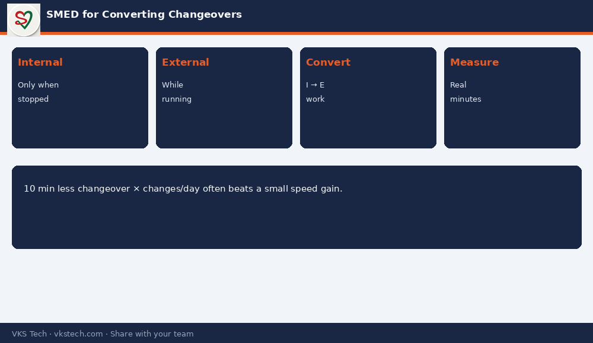

⏱️ Changeover Time Is Not “How Long the Machine Was Stopped”. It Is How Much of That Stop Was Internal vs External Work.
📖 11-min read · SMED · PPC + Production
SMED (Single-Minute Exchange of Die) is not only for stamping presses. In converting, the same idea cuts print, lam and pouch changeovers: move as much work as possible outside the machine stop, standardise the rest, and measure real minutes.
📌 Converting SMED Basics
- Internal: can only be done when machine is stopped (blade in position, plate on cylinder)
- External: can be done while previous job runs (next plates ready, ink staged, tools staged)
- Goal: convert internal → external, then streamline what remains internal
- Measure every changeover for 2 weeks before “improving by opinion”

💡 PPC angle: A 10-minute average reduction in changeover, times number of changes per day, is often more capacity than a small speed increase on the brochure.
⏱️ चेंजओवर समय सिर्फ “मशीन कितनी देर रुकी” नहीं है। वह स्टॉप का कितना हिस्सा इंटरनल बनाम एक्सटर्नल काम था।
📖 11-मिनट पढ़ें · SMED · PPC + प्रोडक्शन
💡 PPC कोण: औसत चेंजओवर में 10 मिनट की कमी अक्सर ब्रॉशर स्पीड बढ़ाने से ज्यादा क्षमता देती है।